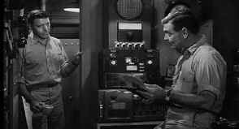

|
Run
Silent, Run Deep/B+,B+ |
|
MGM/1958/93m/WS
1.85, FS 1.33 |
|
This World War II submarine drama packs enough tension into the
confined underwater spaces to stress the rivets of the boat and
crew. When Commander Richardson loses his sub off the Japanese Bungo
Straits the result is a year of desk duty desk at Pearl Harbor.
While several more subs are destroyed under similar circumstances,
Richardson goes over the action again and again in his office until
he requests a new command. The timing is bad for Jim Bledsoe who is
slated to take over the submarine Merkur on her return trip to see.
Instant resentment, a classic conflict and it’s a tension filled
voyage for the Merkur as Richardson trains the crew for deadly shot
at the Japanese killer ship.
 |
|
Bledsoe confronts
Richardson.©MGM |
Clark Gable plays Richardson with world-weariness commensurate with
his years in the movie business. Gable’s sagacious style in Run
Silent, Run Deep keeps the
movie running at an even keel. Burt Lancaster, whose company
produced brought the film, is his usual powerful force as a foil to
Gable. The crew includes the stellar acting support of Jack Warden.
Versatile director Robert Wise has a top-notch crew at the helm of Run
Silent, Run Deep. Abetting his
skilled and straightforward direction is a fine score from Franz
Waxman and Russell Harlan’s clean photography with bright but
balanced key lighting. The result is a classic submarine drama.
The
transfer elements for Run Silent, Run Deep are in terrific
condition. This makes for handsome DVD. The black and white
photography is given strong contrast. The very sharp images have no
evidence of over-enhancement. Harlan’s lighting in comfortably
duplicated for the DVD. The mono sound is clean, the dialog
authoritative. The DVD survives this underwater assignment with a
winning salvo.
|
|
|
Check out the Movie
Poster Archive for short bios and images of Susan
Hayward, Kirk Douglas, Katharine Hepburn and many more. This month's
featured star is Humphrey
Bogart
The Feature
Archive has articles ranging from Akira
Kurosawa to Blonde
Bimbos, The
Heistmasters and John
Ford.

Click on the image of for a candid interview
with Shawshank Redemption director Frank Darabont, Redeeming
the Writer |
|
HOT
LINKS
etown.com
Venerable Internet Magazine etown.com is making a big growth spurt
adding veteran home theater writers to their editorial and review
staff. Look for many new hardware reviews in the coming weeks.
Classic
Movies
Brad Lang movie site continues to be a great
tool for Internet surfers and movie lovers. As usual, he's found
some interesting links. Check out the link for a fine Japanese site
on Kurosawa films.
|
|
Home Theater Reference Reviewing System

When you read a DVD review it's of utmost importance to know what
equipment is being used to evaluate quality. Click on the projectors
to find out more. |
|